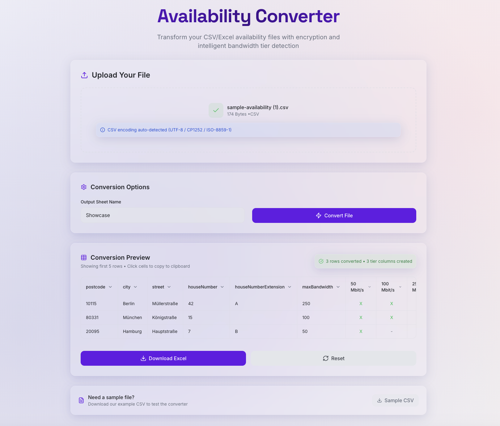
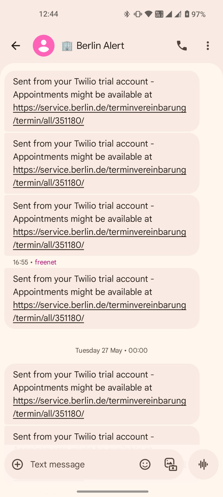

Glass Availability Converter
Pain Point
Smaller providers lacked the technical maturity to integrate availability APIs. Our data team enforced a standard .csv format for internal processing, but differing encryptions and formats meant teams still had to manually manipulate files more than 75% of the time. Because this was an unglamorous task and didn’t neatly fit our OGSM, no development team could prioritize it.
Solution
I built a simple script (with Claude) that ingests .xls and .csv files and transforms them into the required standardized .csv, with correct data structure, spelling, and encryption. I then iterated into a lightweight web app on Replit with a glass UI: drag‑and‑drop file upload, data preview, and a template download for external users.
Demo

Click the preview to watch the demo video.
Tools used
Check24 Price Scraper
Pain Point
It was hard to keep track of frequent feature changes at our competitor and their numerous, dynamic price updates. This monitoring process consumed several hours every week across Product and Key Account Management. Verivox explored working with Preispiranha, a price monitoring and dynamic pricing tool, but negotiations stopped after Verivox got acquired, leaving the gap unfilled.
Solution
I built a website scraper that captures each critical step of the user journey, takes screenshots, and compares them over time. After validating the approach, I extended it to list all products and prices at a given address and compare them with the previous run. With n8n, I created an automation that flags price changes and posts an alert to Microsoft Teams via webhook, helping us stay competitive. After a successful PoC, I shipped a simple UI using Streamlit so colleagues could trigger the script on demand.
Demo

Click the preview to watch the demo video.
Tools used
Einbürgerungstest Appointment Alert
Pain Point
Anyone living in Berlin and aware of the naturalisation process knows how difficult it has become to secure an appointment for the Einbürgerungstest. Previously, you could just show up at test centers, but now appointments are booked online and are never available.
Solution
I created a scraper using n8n to monitor the Berlin website and detect changes on the booking page indicating new appointments. With Twilio, I set up an SMS alert that notified me instantly. Thanks to this setup, I was able to book an appointment the very next day.
Screenshots
Twilio dashboard (desktop)

SMS alert (mobile)